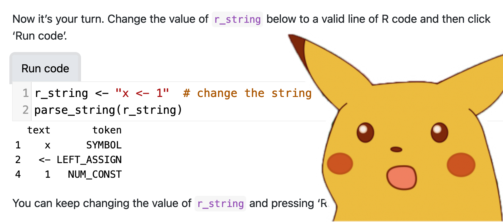
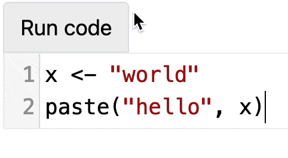

─ Session info ───────────────────────────────────────────────────────────────
setting value
version R version 4.2.0 (2022-04-22)
os macOS Big Sur/Monterey 10.16
system x86_64, darwin17.0
ui X11
language (EN)
collate en_US.UTF-8
ctype en_US.UTF-8
tz Europe/London
date 2023-04-10
pandoc 2.19.2 @ /Applications/RStudio.app/Contents/Resources/app/quarto/bin/tools/ (via rmarkdown)
─ Packages ───────────────────────────────────────────────────────────────────
package * version date (UTC) lib source
cli 3.6.0 2023-01-09 [1] CRAN (R 4.2.0)
digest 0.6.31 2022-12-11 [1] CRAN (R 4.2.0)
evaluate 0.20 2023-01-17 [1] CRAN (R 4.2.0)
fastmap 1.1.0 2021-01-25 [1] CRAN (R 4.2.0)
htmltools 0.5.2 2021-08-25 [1] CRAN (R 4.2.0)
htmlwidgets 1.5.4 2021-09-08 [1] CRAN (R 4.2.0)
jsonlite 1.8.4 2022-12-06 [1] CRAN (R 4.2.0)
knitr 1.42 2023-01-25 [1] CRAN (R 4.2.0)
rlang 1.0.6 2022-09-24 [1] CRAN (R 4.2.0)
rmarkdown 2.14 2022-04-25 [1] CRAN (R 4.2.0)
rstudioapi 0.14 2022-08-22 [1] CRAN (R 4.2.0)
sessioninfo 1.2.2 2021-12-06 [1] CRAN (R 4.2.0)
xfun 0.37 2023-01-31 [1] CRAN (R 4.2.0)
yaml 2.3.7 2023-01-23 [1] CRAN (R 4.2.0)
[1] /Library/Frameworks/R.framework/Versions/4.2/Resources/library
──────────────────────────────────────────────────────────────────────────────
tl;dr
WebR lets you run R in the browser(!). Now you can make WebR chunks in Quarto that render to editable, executable blocks(!).
Sliding into tedium
I wrote recently a simple introduction to how R parses code. I provided a function that I said the reader could go away and run themselves.
As in… copy-paste it into an instance of R running on their machine. Gross.
Wouldn’t it be better if people could just tinker with the code right there in the post? This kind of ‘playground’ could be great for explaining concepts and teaching.1
I seesaw a solution
WebR lets you run R in the browser. Read that again! This is a landmark piece of work from George Stagg and Lionel Henry.
I won’t go into technicals and limitations here. For more information, see:
Crucially for my needs, you can now run WebR chunks in a Quarto document, thanks to James J Balamuta. This renders interactive blocks of R code that the reader can adjust and execute with button-click:

Beware: this is a gif, not an embedded demo!
Check out James’s coatless/quarto-webr GitHub repo for the source. There’s also a live demo and its source.
Swinging into action
To have a go yourself, do follow the setup steps in James’s quarto-webr README and look at the source of his demo.
Ultimately you can:
- Install the extension to your project folder by running
quarto add coatless/quarto-webrin the terminal - Set
filter: webrin the YAML of your qmd file2 - Write code chunks in the qmd using the
{webr}engine
This made it straightforward to prepare a little Quarto doc with chunks powered by the ‘webr’ engine, which I deployed to the web via Netlify.3
You can visit that live page or see the underlying source on GitHub.4
So now you can tinker with the example I gave in the original blogpost about parsing R code. Unfortunately I can’t add this directly to the post, since this blog is not made with Quarto.
A blog-platform merry-go-round
I’ve written this quick demo and post because I was excited about what George & Lionel and James have put together. There’s so many system-independent applications of this approach that could help with teaching and learning, or explaining simple ideas in a blog post.
In fact, this blog may eventually switch from {blogdown} to Quarto to take advantage of WebR. It’ll be a pain to convert old posts, but luckily I already missed the earlier {blogdown}-to-{distill} bandwagon, lol.5
Session info
Footnotes
A nice example of this in a teaching context is W3 Schools, who have a ‘Try It Yourself’ space that lets you take code from the lessons and tinker with it yourself in the browser.↩︎
Set also
engine: knitrin the YAML to use {knitr} instead of Jupyter to handle the conversion. You can addformat: htmlto ensure that the output is rendered to HTML.↩︎Self-deployment and Netlify are viable for now, GitHub Pages is coming later. Netlify is how this blog is deployed.↩︎
Originally I tried to embed the Quarto demo in an iframe, but WebR failed to load inside it when the blog was rendered. That’s interesting.↩︎
But came close when I thought I’d found a system for making individual posts reproducible.↩︎
Reuse
CC BY-NC-SA 4.0